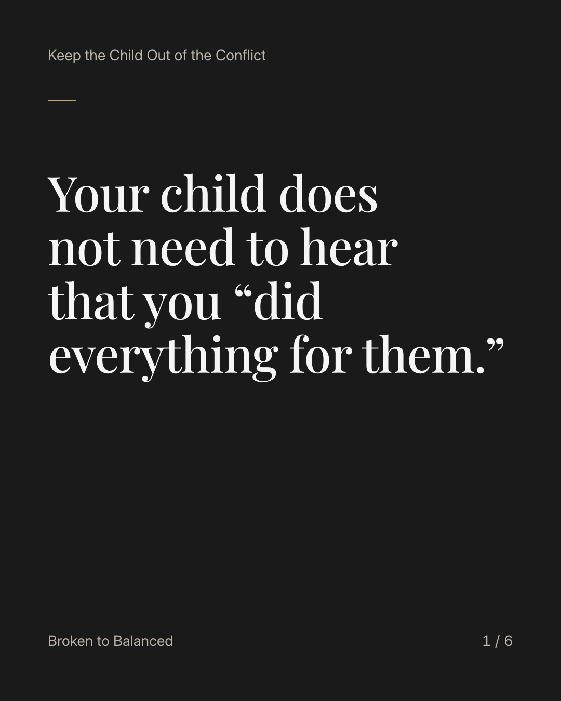
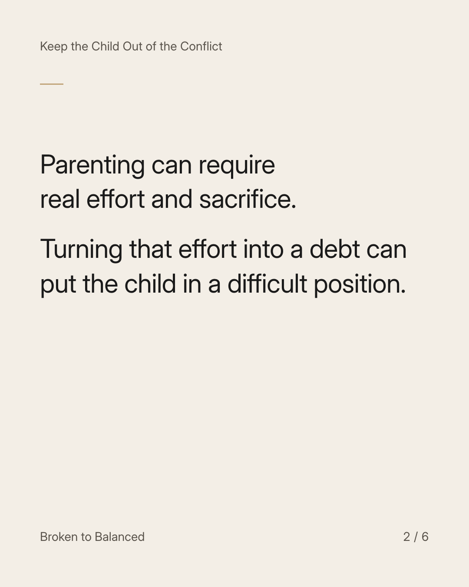
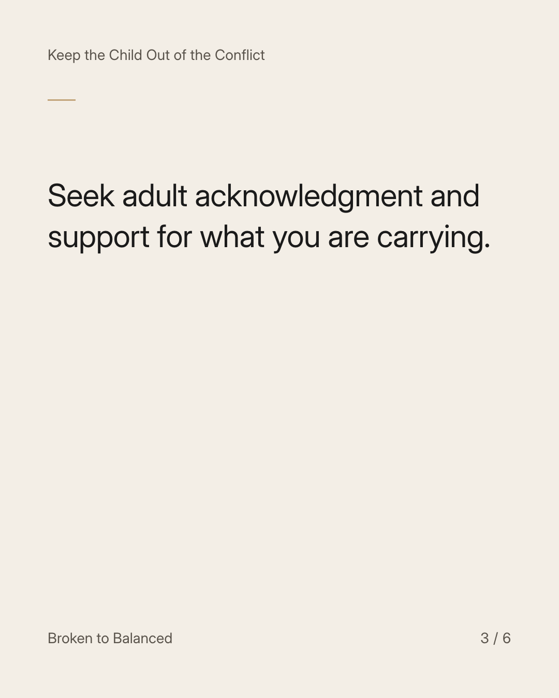
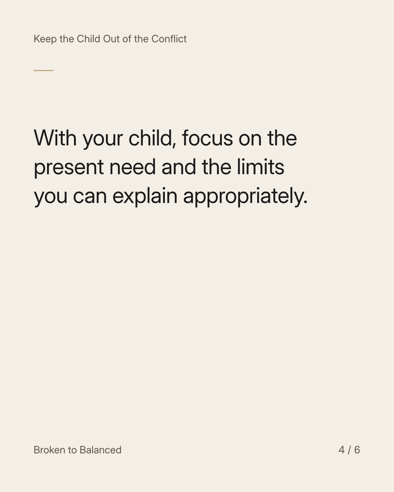
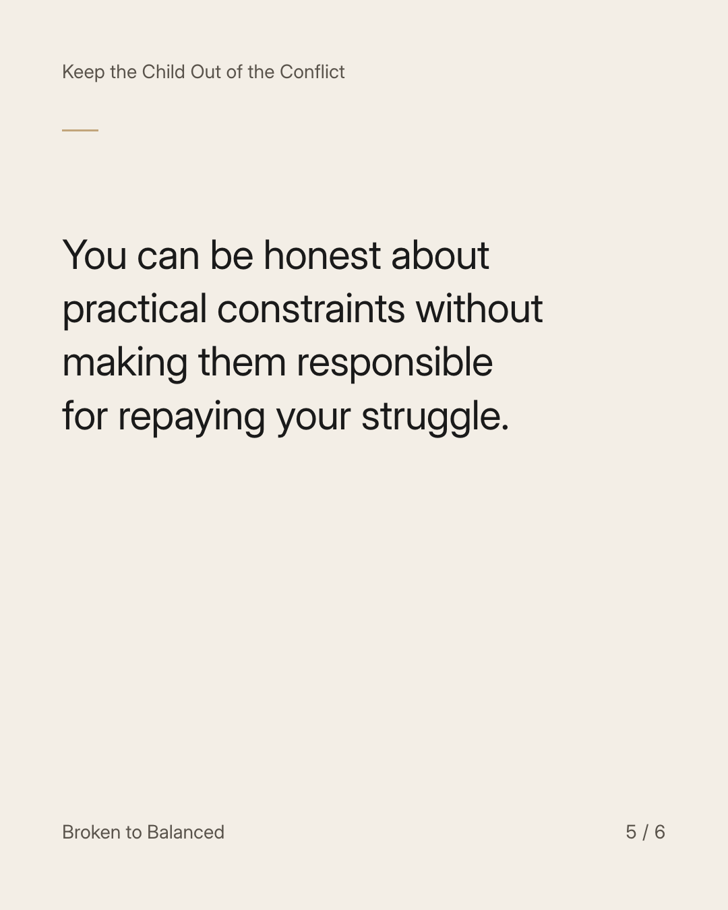
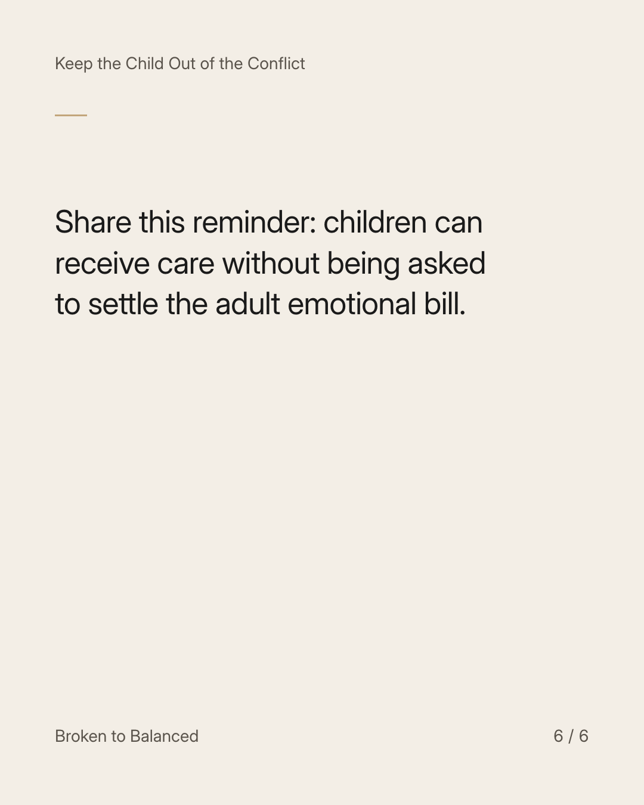

Exact text and accessibility text
Your child does not need to hear that you “did everything for them.”
Slide 1 of 6. Your child does not need to hear that you “did everything for them.”


Exact text and accessibility text
Parenting can require real effort and sacrifice. Turning that effort into a debt can put the child in a difficult position.
Slide 2 of 6. Parenting can require real effort and sacrifice. Turning that effort into a debt can put the child in a difficult position.


Exact text and accessibility text
Seek adult acknowledgment and support for what you are carrying.
Slide 3 of 6. Seek adult acknowledgment and support for what you are carrying.


Exact text and accessibility text
With your child, focus on the present need and the limits you can explain appropriately.
Slide 4 of 6. With your child, focus on the present need and the limits you can explain appropriately.


Exact text and accessibility text
You can be honest about practical constraints without making them responsible for repaying your struggle.
Slide 5 of 6. You can be honest about practical constraints without making them responsible for repaying your struggle.


Exact text and accessibility text
Share this reminder: children can receive care without being asked to settle the adult emotional bill.
Slide 6 of 6. Share this reminder: children can receive care without being asked to settle the adult emotional bill.
Exact caption
Plain-text fallback: select and copy the caption.